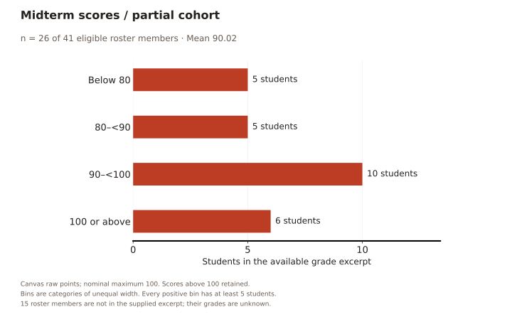
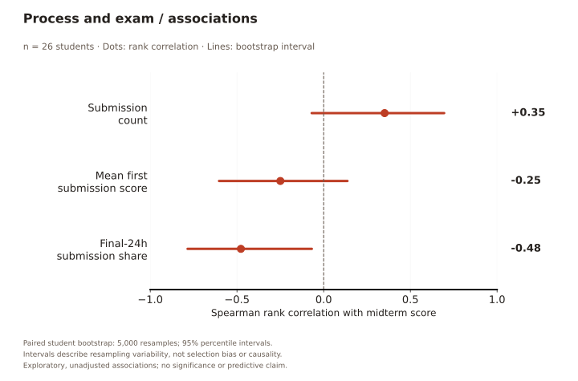
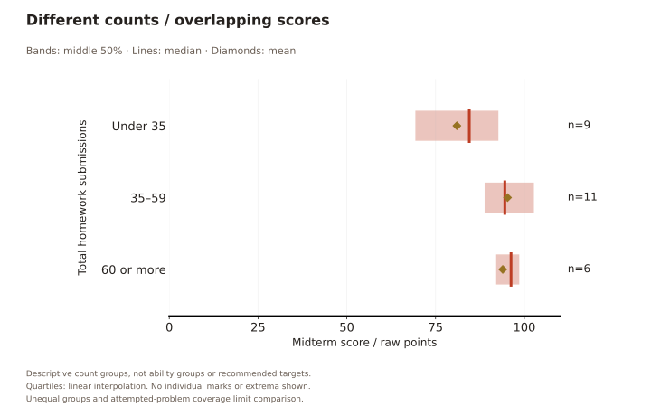
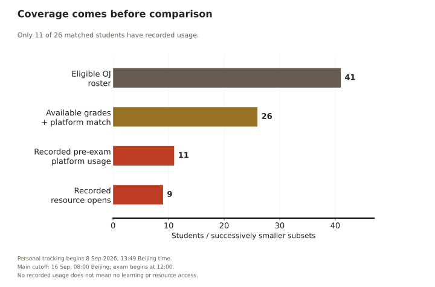
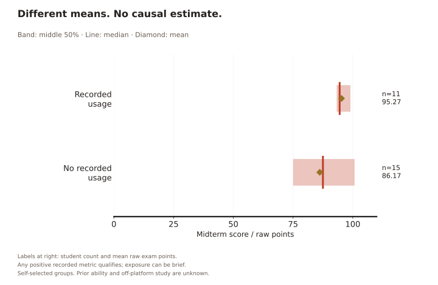
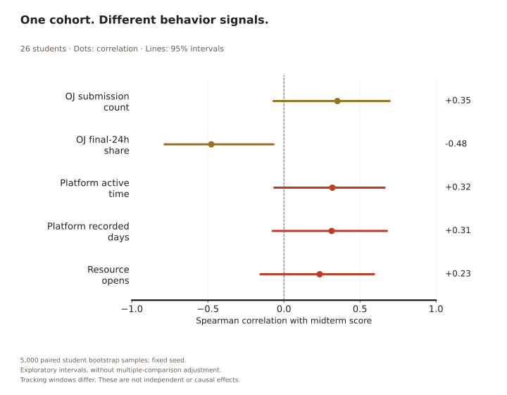

RESEARCH COMPANION
Analysis & methods
Interpretations, accessible data tables, sources and limitations for the visual story.
THE QUESTION
What do near-perfect scores leave out?
In the participation_mode=0 records, 37/40 HW1 scores, 33/39 HW2 scores and 37/39 HW3 scores are 100. The formal interpretation of this participation field still needs confirmation. These records motivate a process-focused analysis; they are not a substitute for verifying the official grading rules.
Within the observation windows, 178 submissions earned partial credit. The figures below describe that recorded process. Submission gaps are not measured study time, and more attempts do not establish greater effort or better learning.
TIMING
Activity volume and participation tell different stories.
Across the full day on 29 August, 233 submissions came from 14 students. In the visible 12:00–16:00 cell, 153 submissions came from 12 students. A busy period need not mean the whole class was working then.

{kind=link}
{kind=link}
Accessible data table · calendar
| Date | Hours (Beijing) | Status | Submissions | Distinct contributors |
|---|---|---|---|---|
| 2026-08-26 | 00:00–04:00 | inactive | — | — |
| 2026-08-26 | 04:00–08:00 | inactive | — | — |
| 2026-08-26 | 08:00–12:00 | inactive | — | — |
| 2026-08-26 | 12:00–16:00 | visible | 0 | 0 |
| 2026-08-26 | 16:00–20:00 | visible | 0 | 0 |
| 2026-08-26 | 20:00–24:00 | visible | 0 | 0 |
| 2026-08-27 | 00:00–04:00 | visible | 0 | 0 |
| 2026-08-27 | 04:00–08:00 | visible | 0 | 0 |
| 2026-08-27 | 08:00–12:00 | visible | 0 | 0 |
| 2026-08-27 | 12:00–16:00 | suppressed | — | — |
| 2026-08-27 | 16:00–20:00 | suppressed | — | — |
| 2026-08-27 | 20:00–24:00 | suppressed | — | — |
| 2026-08-28 | 00:00–04:00 | visible | 0 | 0 |
| 2026-08-28 | 04:00–08:00 | visible | 0 | 0 |
| 2026-08-28 | 08:00–12:00 | suppressed | — | — |
| 2026-08-28 | 12:00–16:00 | visible | 57 | 9 |
| 2026-08-28 | 16:00–20:00 | visible | 25 | 6 |
| 2026-08-28 | 20:00–24:00 | suppressed | — | — |
| 2026-08-29 | 00:00–04:00 | suppressed | — | — |
| 2026-08-29 | 04:00–08:00 | visible | 0 | 0 |
| 2026-08-29 | 08:00–12:00 | suppressed | — | — |
| 2026-08-29 | 12:00–16:00 | visible | 153 | 12 |
| 2026-08-29 | 16:00–20:00 | visible | 57 | 8 |
| 2026-08-29 | 20:00–24:00 | suppressed | — | — |
| 2026-08-30 | 00:00–04:00 | suppressed | — | — |
| 2026-08-30 | 04:00–08:00 | visible | 0 | 0 |
| 2026-08-30 | 08:00–12:00 | visible | 0 | 0 |
| 2026-08-30 | 12:00–16:00 | suppressed | — | — |
| 2026-08-30 | 16:00–20:00 | visible | 46 | 7 |
| 2026-08-30 | 20:00–24:00 | visible | 17 | 6 |
| 2026-08-31 | 00:00–04:00 | suppressed | — | — |
| 2026-08-31 | 04:00–08:00 | suppressed | — | — |
| 2026-08-31 | 08:00–12:00 | suppressed | — | — |
| 2026-08-31 | 12:00–16:00 | suppressed | — | — |
| 2026-08-31 | 16:00–20:00 | visible | 0 | 0 |
| 2026-08-31 | 20:00–24:00 | visible | 30 | 5 |
| 2026-09-01 | 00:00–04:00 | suppressed | — | — |
| 2026-09-01 | 04:00–08:00 | visible | 0 | 0 |
| 2026-09-01 | 08:00–12:00 | suppressed | — | — |
| 2026-09-01 | 12:00–16:00 | suppressed | — | — |
| 2026-09-01 | 16:00–20:00 | visible | 31 | 7 |
| 2026-09-01 | 20:00–24:00 | visible | 46 | 7 |
| 2026-09-02 | 00:00–04:00 | inactive | — | — |
| 2026-09-02 | 04:00–08:00 | inactive | — | — |
| 2026-09-02 | 08:00–12:00 | inactive | — | — |
| 2026-09-02 | 12:00–16:00 | inactive | — | — |
| 2026-09-02 | 16:00–20:00 | inactive | — | — |
| 2026-09-02 | 20:00–24:00 | inactive | — | — |
| 2026-09-03 | 00:00–04:00 | inactive | — | — |
| 2026-09-03 | 04:00–08:00 | inactive | — | — |
| 2026-09-03 | 08:00–12:00 | inactive | — | — |
| 2026-09-03 | 12:00–16:00 | visible | 17 | 5 |
| 2026-09-03 | 16:00–20:00 | visible | 27 | 6 |
| 2026-09-03 | 20:00–24:00 | suppressed | — | — |
| 2026-09-04 | 00:00–04:00 | visible | 0 | 0 |
| 2026-09-04 | 04:00–08:00 | suppressed | — | — |
| 2026-09-04 | 08:00–12:00 | suppressed | — | — |
| 2026-09-04 | 12:00–16:00 | visible | 37 | 8 |
| 2026-09-04 | 16:00–20:00 | visible | 62 | 11 |
| 2026-09-04 | 20:00–24:00 | visible | 32 | 6 |
| 2026-09-05 | 00:00–04:00 | suppressed | — | — |
| 2026-09-05 | 04:00–08:00 | visible | 0 | 0 |
| 2026-09-05 | 08:00–12:00 | suppressed | — | — |
| 2026-09-05 | 12:00–16:00 | suppressed | — | — |
| 2026-09-05 | 16:00–20:00 | visible | 74 | 6 |
| 2026-09-05 | 20:00–24:00 | suppressed | — | — |
| 2026-09-06 | 00:00–04:00 | suppressed | — | — |
| 2026-09-06 | 04:00–08:00 | visible | 0 | 0 |
| 2026-09-06 | 08:00–12:00 | suppressed | — | — |
| 2026-09-06 | 12:00–16:00 | suppressed | — | — |
| 2026-09-06 | 16:00–20:00 | suppressed | — | — |
| 2026-09-06 | 20:00–24:00 | suppressed | — | — |
| 2026-09-07 | 00:00–04:00 | suppressed | — | — |
| 2026-09-07 | 04:00–08:00 | visible | 0 | 0 |
| 2026-09-07 | 08:00–12:00 | suppressed | — | — |
| 2026-09-07 | 12:00–16:00 | visible | 43 | 6 |
| 2026-09-07 | 16:00–20:00 | suppressed | — | — |
| 2026-09-07 | 20:00–24:00 | suppressed | — | — |
| 2026-09-08 | 00:00–04:00 | visible | 0 | 0 |
| 2026-09-08 | 04:00–08:00 | suppressed | — | — |
| 2026-09-08 | 08:00–12:00 | suppressed | — | — |
| 2026-09-08 | 12:00–16:00 | suppressed | — | — |
| 2026-09-08 | 16:00–20:00 | visible | 40 | 5 |
| 2026-09-08 | 20:00–24:00 | visible | 59 | 6 |
| 2026-09-09 | 00:00–04:00 | inactive | — | — |
| 2026-09-09 | 04:00–08:00 | inactive | — | — |
| 2026-09-09 | 08:00–12:00 | inactive | — | — |
| 2026-09-09 | 12:00–16:00 | inactive | — | — |
| 2026-09-09 | 16:00–20:00 | inactive | — | — |
| 2026-09-09 | 20:00–24:00 | inactive | — | — |
| 2026-09-10 | 00:00–04:00 | inactive | — | — |
| 2026-09-10 | 04:00–08:00 | inactive | — | — |
| 2026-09-10 | 08:00–12:00 | inactive | — | — |
| 2026-09-10 | 12:00–16:00 | inactive | — | — |
| 2026-09-10 | 16:00–20:00 | inactive | — | — |
| 2026-09-10 | 20:00–24:00 | inactive | — | — |
| 2026-09-11 | 00:00–04:00 | inactive | — | — |
| 2026-09-11 | 04:00–08:00 | inactive | — | — |
| 2026-09-11 | 08:00–12:00 | suppressed | — | — |
| 2026-09-11 | 12:00–16:00 | visible | 86 | 6 |
| 2026-09-11 | 16:00–20:00 | visible | 82 | 8 |
| 2026-09-11 | 20:00–24:00 | visible | 35 | 5 |
| 2026-09-12 | 00:00–04:00 | suppressed | — | — |
| 2026-09-12 | 04:00–08:00 | visible | 0 | 0 |
| 2026-09-12 | 08:00–12:00 | suppressed | — | — |
| 2026-09-12 | 12:00–16:00 | visible | 41 | 7 |
| 2026-09-12 | 16:00–20:00 | visible | 38 | 10 |
| 2026-09-12 | 20:00–24:00 | visible | 36 | 7 |
| 2026-09-13 | 00:00–04:00 | suppressed | — | — |
| 2026-09-13 | 04:00–08:00 | suppressed | — | — |
| 2026-09-13 | 08:00–12:00 | suppressed | — | — |
| 2026-09-13 | 12:00–16:00 | suppressed | — | — |
| 2026-09-13 | 16:00–20:00 | visible | 62 | 8 |
| 2026-09-13 | 20:00–24:00 | suppressed | — | — |
| 2026-09-14 | 00:00–04:00 | suppressed | — | — |
| 2026-09-14 | 04:00–08:00 | suppressed | — | — |
| 2026-09-14 | 08:00–12:00 | suppressed | — | — |
| 2026-09-14 | 12:00–16:00 | visible | 31 | 5 |
| 2026-09-14 | 16:00–20:00 | suppressed | — | — |
| 2026-09-14 | 20:00–24:00 | visible | 62 | 10 |
| 2026-09-15 | 00:00–04:00 | suppressed | — | — |
| 2026-09-15 | 04:00–08:00 | visible | 0 | 0 |
| 2026-09-15 | 08:00–12:00 | suppressed | — | — |
| 2026-09-15 | 12:00–16:00 | suppressed | — | — |
| 2026-09-15 | 16:00–20:00 | visible | 44 | 9 |
| 2026-09-15 | 20:00–24:00 | visible | 54 | 9 |
Planned interaction / animation
Filter by HW1, HW2 or HW3; switch between submissions and distinct contributors; select a day to inspect its time distribution. These controls will distinguish broad participation from repeated attempts. The public view will retain suppression after filtering. No animation is needed to read timing accurately.
RETRIES
A typical count hides a wide range.
Median counts are 12.5, 13 and 14, but observed ranges are 8–98, 3–62 and 7–108. The distributions include only students who submitted within each homework window. The underlying tasks also differ: HW1 and HW2 have eight problems; HW3 has seven.

{kind=link}
{kind=link}
Accessible data table · attempt counts
| Homework | Problems | Submitters | Submissions | Minimum | Q1 | Median | Q3 | Maximum |
|---|---|---|---|---|---|---|---|---|
| HW1 | 8 | 38 | 673 | 8 | 9.25 | 12.5 | 17 | 98 |
| HW2 | 8 | 38 | 664 | 3 | 10 | 13 | 17.75 | 62 |
| HW3 | 7 | 39 | 764 | 7 | 9.5 | 14 | 19 | 108 |
Planned interaction / animation
Switch between all attempts and attempts through the first accepted submission for each student–problem pair, including that successful attempt. Retain all observed attempts for pairs that never reach acceptance. Animate the box transition briefly, with a reduced-motion option, to show how 318 post-acceptance submissions affect the distributions. Acceptance uses the recorded AC verdict; it is distinct from normalized full score.
SCORE PROGRESSION
The endpoint does not tell the whole story.
HW3 TicTacToe has the largest first-to-best difference: its 39 attempters average 37.95 on their first submission and 100 for their best observed score, a difference of 62.05 percentage points. Both means use the same students.

{kind=link}
{kind=link}
Accessible data table · first and best scores
| Homework | Problem | Name | Attempters | First mean | Best mean | Difference (pp) |
|---|---|---|---|---|---|---|
| HW1 | P2 | Exercise2.5-EggsGrossDozensLeftover | 38 | 60.53 | 100.00 | 39.47 |
| HW1 | P6 | Exercise3.3-SimpleCalculator | 38 | 65.79 | 100.00 | 34.21 |
| HW1 | P7 | HW1-ConsectiveFours | 38 | 74.21 | 100.00 | 25.79 |
| HW1 | P5 | HW1-SentinelValue | 38 | 76.32 | 100.00 | 23.68 |
| HW1 | P4 | Exercise1.2.15 Triangle Sides | 38 | 80.00 | 100.00 | 20.00 |
| HW1 | P3 | HW1-LargeToSmall | 38 | 80.00 | 99.47 | 19.47 |
| HW1 | P8 | Exercise1.4.15-InPlaceTranspose | 38 | 88.60 | 100.00 | 11.40 |
| HW1 | P1 | HW1-ComputeDisplacement | 38 | 90.00 | 100.00 | 10.00 |
| HW2 | P7 | IntQuestion | 35 | 53.14 | 97.14 | 44.00 |
| HW2 | P8 | ShapeZoo | 35 | 57.14 | 100.00 | 42.86 |
| HW2 | P3 | PairOfDice | 37 | 57.30 | 97.30 | 40.00 |
| HW2 | P5 | Complex | 36 | 64.44 | 100.00 | 35.56 |
| HW2 | P2 | CreditCard | 37 | 65.95 | 97.30 | 31.35 |
| HW2 | P6 | CampusDirectory | 36 | 64.44 | 94.44 | 30.00 |
| HW2 | P4 | Charge | 37 | 75.68 | 100.00 | 24.32 |
| HW2 | P1 | Normalization | 37 | 81.62 | 100.00 | 18.38 |
| HW3 | P7 | TicTacToe | 39 | 37.95 | 100.00 | 62.05 |
| HW3 | P1 | 26s3HW3-EvenOrOdd | 39 | 40.51 | 100.00 | 59.49 |
| HW3 | P2 | 26s3HW3-DigitProcessing | 39 | 64.10 | 100.00 | 35.90 |
| HW3 | P3 | Hanoi | 39 | 67.69 | 100.00 | 32.31 |
| HW3 | P5 | Rectangle | 39 | 67.69 | 100.00 | 32.31 |
| HW3 | P4 | MeasureBox | 39 | 79.49 | 100.00 | 20.51 |
| HW3 | P6 | LargeNumber | 39 | 83.08 | 96.92 | 13.85 |
Planned interaction / animation
Filter by homework and switch the best-score endpoint between the first two attempts, first three attempts and all observed attempts. Keep the original set of attempters: for students with fewer attempts, use their best observed score so far. A short endpoint transition will reveal where gains accumulate without changing the comparison cohort.
MEAN SCORE BY ATTEMPT
What does each successive submission actually score?
Each point averages the actual score on the nth submission to the same homework problem, normalized to 0–100. HW1, HW2 and HW3 are separate panels. This is not a running-best curve.
For HW1, the first-attempt mean is 76.93 across 304 student–problem events from 38 students; the second-attempt mean is 64.53 across 106 events from 34 students. Students who finish a problem and stop submitting no longer contribute to its later points. A lower later mean does not mean the same group became worse.

{kind=link}
{kind=link}
Accessible data table · actual score by attempt
| Homework | Attempt | Mean actual score (%) | Submission events (N) | Distinct students (S) |
|---|---|---|---|---|
| HW1 | 1 | 76.93 | 304 | 38 |
| HW1 | 2 | 64.53 | 106 | 34 |
| HW1 | 3 | 49.62 | 52 | 25 |
| HW1 | 4 | 52.52 | 37 | 18 |
| HW1 | 5 | 46.67 | 24 | 11 |
| HW1 | 6 | 24.44 | 18 | 10 |
| HW1 | 7 | 33.33 | 15 | 9 |
| HW1 | 8 | 28.57 | 14 | 9 |
| HW1 | 9 | 25.45 | 11 | 7 |
| HW1 | 10 | 20.00 | 10 | 6 |
| HW1 | 11 | 25.00 | 8 | 6 |
| HW1 | 12 | 28.57 | 7 | 5 |
| HW1 | 13 | 54.29 | 7 | 5 |
| HW2 | 1 | 65.10 | 290 | 38 |
| HW2 | 2 | 57.61 | 134 | 33 |
| HW2 | 3 | 45.95 | 74 | 25 |
| HW2 | 4 | 46.12 | 49 | 17 |
| HW2 | 5 | 51.11 | 36 | 13 |
| HW2 | 6 | 54.29 | 21 | 8 |
| HW2 | 7 | 51.25 | 16 | 7 |
| HW2 | 8 | 27.27 | 11 | 6 |
| HW2 | 9 | 38.00 | 10 | 5 |
| HW3 | 1 | 62.93 | 273 | 39 |
| HW3 | 2 | 45.93 | 118 | 36 |
| HW3 | 3 | 45.45 | 77 | 32 |
| HW3 | 4 | 46.61 | 59 | 27 |
| HW3 | 5 | 34.00 | 40 | 17 |
| HW3 | 6 | 36.33 | 30 | 12 |
| HW3 | 7 | 48.93 | 28 | 11 |
| HW3 | 8 | 54.09 | 22 | 9 |
| HW3 | 9 | 53.75 | 16 | 8 |
| HW3 | 10 | 43.33 | 15 | 7 |
| HW3 | 11 | 40.77 | 13 | 6 |
| HW3 | 12 | 36.36 | 11 | 6 |
| HW3 | 13 | 33.33 | 9 | 5 |
| HW3 | 14 | 44.44 | 9 | 5 |
Planned interaction / animation
Filter by problem or homework, inspect mean/N/S on hover, and compare actual-attempt scores with cumulative-best summaries under explicitly different cohort definitions. Keep sample counts visible during transitions and apply the minimum-contributor rule after filtering. The purpose is to expose changing sample composition, not imply individual learning trajectories.
MIDTERM / AVAILABLE SCORES
A wider spread behind near-perfect homework.
The available midterm scores have a mean of 90.02 and median of 93.25. Canvas lists a nominal maximum of 100; values above 100 are preserved as raw points. No grade is capped or inferred.
26 matched students from a 41-member eligible roster; 15 grades were not in the supplied excerpt. This is a partial, non-random cohort, not the class grade distribution.

{kind=link}
{kind=link}
Accessible data table · midterm distribution
| Raw midterm points | Students |
|---|---|
| Below 80 | 5 |
| 80–<90 | 5 |
| 90–<100 | 10 |
| 100 or above | 6 |
HOMEWORK PROCESS / EXAM OUTCOME
Signals worth testing. Not a prediction model.
In this excerpt, final-day submission share has the clearest negative rank association with exam scores (ρ = -0.48). Submission count is positively associated and mean first-submission score negatively associated, but both corresponding bootstrap intervals cross zero.
All selected homework windows end before the user-confirmed exam start.

{kind=link}
{kind=link}
Accessible data table · associations and sensitivity
| Behavior | N | Spearman ρ | 95% bootstrap interval | Leave-one-out range |
|---|---|---|---|---|
| Submission count | 26 | +0.351 | -0.069 to +0.695 | +0.270 to +0.457 |
| Mean first-submission score | 26 | -0.250 | -0.603 to +0.137 | -0.344 to -0.185 |
| Share submitted in final 24 hours | 26 | -0.477 | -0.785 to -0.068 | -0.605 to -0.425 |
| Behavior | All matched | All 23 problem slots attempted | Without homework discrepancies |
|---|---|---|---|
| Submission count | +0.351 (n=26) | +0.255 (n=23) | +0.259 (n=24) |
| Mean first-submission score | -0.250 (n=26) | -0.287 (n=23) | -0.247 (n=24) |
| Share submitted in final 24 hours | -0.477 (n=26) | -0.430 (n=23) | -0.474 (n=24) |
What the three behaviors mean
- Submission count: all submissions inside each configured HW1–HW3 window, including attempts after acceptance.
- Mean first-submission score: first normalized score per attempted assignment–problem slot, then the mean within each student. Unattempted slots are not imputed as zero. Coverage varies, so a separate all-23-slots sensitivity check is shown.
- Final-24h share: the percentage of a student's in-window submissions made in the final 24 hours before that homework's configured deadline. It does not measure time spent studying or account for individual extensions.
A first submission can follow off-platform work, and students may submit drafts at different stages. More submissions do not necessarily mean more effort; lower initial scores do not establish lower prior ability. The signs here are exploratory and can reflect cohort selection, problem coverage and different submission practices.
SUBMISSION GROUPS / SCORE DISPERSION
The groups overlap. Counts are not a target.
Group means are 81.00, 95.27 and 93.92 for under 35, 35–59 and 60 or more submissions. The middle group has the highest mean, while the highest-count group has the highest median. A single summary cannot establish that additional attempts improve an exam score.

{kind=link}
{kind=link}
Accessible data table · grouped scores
| Homework submissions | N | Mean exam | Q1 | Median | Q3 |
|---|---|---|---|---|---|
| Under 35 | 9 | 81.0 | 69.5 | 84.5 | 92.5 |
| 35–59 | 11 | 95.27 | 89.0 | 94.5 | 102.5 |
| 60 or more | 6 | 93.92 | 92.25 | 96.25 | 98.38 |
COURSE PULSE / OBSERVATION COVERAGE
A second window. Not the whole learning process.
All 26 available grade records have a unique normalized-name match to a Course Pulse student account. Of those, 11 have recorded pre-exam platform activity, including nine with resource-open events. The other 15 have no observed activity in this tracking window; this does not establish that they did not study.
Personal tracking began on 8 September at 13:49 Beijing time. Main analysis ends on 16 September at 08:00, four hours before the exam, because metrics are aggregated by UTC day. OJ metrics span all three configured homework windows, so the sources cover different periods.

{kind=link}
{kind=link}
Accessible data table · coverage
| Subset | Students |
|---|---|
| Eligible OJ roster | 41 |
| Available grades matched to Course Pulse | 26 |
| Of those: recorded pre-exam platform usage | 11 |
| Of those: recorded resource opens | 9 |
PLATFORM RECORDS / EXAM OUTCOMES
A difference to investigate. Not an effect to advertise.
The 11 students with recorded activity average 95.27 points, compared with 86.17 among the 15 without a record. Their medians are 94.5 and 87.5. A 9.11-point difference between self-selected groups is not an estimate of what the platform caused.
Any positive recorded metric qualifies, including a brief visit. Students can download materials and study offline, use other tools, or differ in prior knowledge and motivation. These factors are not controlled here.

{kind=link}
{kind=link}
Accessible data table · platform groups
| Observed platform usage | N | Mean | Q1 | Median | Q3 |
|---|---|---|---|---|---|
| Recorded usage | 11 | 95.27 | 93.25 | 94.5 | 99.0 |
| No recorded usage | 15 | 86.17 | 75.0 | 87.5 | 100.75 |
OJ + COURSE PULSE / SYNTHESIS
Timing stands out. Usage remains uncertain.
Final-day OJ submission share remains negatively associated with exam scores. Platform active time, recorded days and resource opens each show positive rank associations, but all three platform intervals cross zero. These measures do not yet establish a reliable usage–achievement relationship.
Active time estimates foreground interaction, with an idle limit; it does not measure attention or total study time. Missing platform events are represented as zero recorded events only within the instrumented window. No claim is made about activity before tracking began.

{kind=link}
{kind=link}
Accessible tables · correlations and cutoff sensitivity
| Behavior | N | Spearman ρ | 95% bootstrap interval |
|---|---|---|---|
| Submission count | 26 | +0.351 | -0.069 to +0.695 |
| Share submitted in final 24 hours | 26 | -0.477 | -0.785 to -0.068 |
| Platform active time | 26 | +0.318 | -0.063 to +0.662 |
| Platform recorded days | 26 | +0.314 | -0.074 to +0.677 |
| Resource opens | 26 | +0.235 | -0.155 to +0.592 |
| Platform metric | Main cutoff | Plus verified exam-morning cells |
|---|---|---|
| Platform active time | +0.318 | +0.318 |
| Platform recorded days | +0.314 | +0.314 |
| Resource opens | +0.235 | +0.235 |
What the combined evidence supports
Similar homework endpoints can conceal different submission schedules and resource-use patterns. In this partial cohort, concentrated final-day submissions accompany lower exam scores, while recorded platform users have higher average scores. Platform intensity remains uncertain, and prior ability, motivation and off-platform study could explain these patterns.
Why AI and practice effectiveness are not plotted
The export includes assistant replies, staff activity and messages that cannot be linked to current accounts. Linked student messages are concentrated on one date, and overlap with the available grade cohort is too small for a useful public comparison. Practice records are current draft snapshots, with no submitted outcomes; they cannot reconstruct edits, completed exercises or learning gains. These sources need further validation before effectiveness claims.
The next useful evidence is the remaining grades and a longer, consistently instrumented observation period. More variables alone will not resolve cohort selection or confounding.
Only real recorded usage is included; editable reported totals, demo accounts and staff activity are excluded. Raw CSVs, names, account IDs, messages and code remain outside the public repository. Public groups have at least five students; this reduces disclosure but is not a formal anonymity guarantee.
Download platform aggregate JSON · Sources, definitions and reproduction ↗
DATASET & PROCESSING
From private event logs to reproducible summaries.
Raw dataset · private
A read-only CS201 course export contains nine tables: metadata, course, roster, assignments, submissions, assignment–problem mappings, problems, participations and submission–assignment links. The scoped export contains 42 non-staff/non-superuser roster members and 2,343 submission events from 40 members, across seven assignments. It excludes source code and direct identity fields from the analysis bundle. Pseudonyms remain private.
The export is a snapshot, not a live connection. The website never queries the production server. Raw logs, individual scores and the linkage key are not published.
Processed dataset · public
The three homework assignments contain 2,171 submission events. Restricting each event to its own configured homework opening and deadline retains 2,101 events from 39 students; 70 events outside these windows remain in the raw export but are excluded from these figures.
The published aggregate JSON contains masked time bins, homework count distributions and per-problem score means. It contains no student identifiers or event-level records. Public bins require at least five contributors; suppression reduces disclosure but is not a formal privacy guarantee.
Completed processing
- Confirmed the CS201 roster scope, removed staff/superuser accounts, and recorded the original account scope. A test account identified on 21 September is excluded from the new midterm cohort; the original snapshot denominator is retained and explicitly labeled.
- Checked unique keys and join coverage for submissions, assignment links and problem maxima. Repeated attempts remain separate events; they are not treated as accidental duplicates.
- Converted UTC timestamps to Asia/Shanghai before assigning dates or time bins; selected the configured homework windows below.
- Validated finite scores and positive maxima, then calculated
100 × assignment_submission_score / problem_max_points. Raw cross-problem scores are not mixed. - Sorted student–homework–problem events by timestamp and submission ID, computed first and running-best scores, and aggregated over the same attempters.
- Created summary boxplots and masked calendar bins. Zero-submitters remain in the roster count but are excluded from attempt-count distributions.
| Homework | Opens (UTC+08) | Configured deadline (UTC+08) | Outside-window records |
|---|---|---|---|
| HW1 | 2026-08-26 15:00 | 2026-09-01 23:59 | 14 |
| HW2 | 2026-09-03 12:00 | 2026-09-08 23:59 | 35 |
| HW3 | 2026-09-11 11:00 | 2026-09-15 23:59 | 21 |
Scope limitations: configured deadlines may differ from individual extensions. These are recorded submissions, not all work a student performed. The original homework figures use the 20 September snapshot. The midterm extension uses a separately verified, partial cohort; Course Pulse usage is analyzed separately in chapters 08–10; no causal claims are made.
Detailed methods and data dictionary ↗ · Source and reproduction instructions ↗
EVALUATION PLAN · NOT YET CONDUCTED
Can readers interpret the evidence correctly?
A 15–20 minute formative study with approximately five classmates or teaching assistants. We will test the selected layout and revise the specific places where readers struggle.
Who & how
Aim for three classmates and two TAs, after a separate pilot. Include desktop and mobile sessions. Allow up to 90 seconds per information task; collect explanations afterward. Participation is voluntary, and no grades or names are collected.
What we measure
Answer accuracy, completion time, assistance, confidence and recurring misunderstandings. Record successful, partial, failed and timed-out attempts separately; use anonymous participant codes.
| Task | Reader action | Evidence of understanding |
|---|---|---|
| Timing | Find the largest visible time cell and read both panels. | Correct time, submission count and distinct people. |
| Retries | Compare the three medians and observed ranges. | Correct homework, median and min–max interpretation. |
| Score progression | Find the largest first-to-best difference. | Correct problem and approximate percentage-point gap. |
| Actual attempt scores | Explain HW1's first-to-second mean change using N/S. | Recognizes a changing cohort; does not infer individual decline. |
| Midterm coverage | Identify the matched cohort and the unavailable grades. | 26 of 41 eligible members; 15 not in the excerpt, not zero scores. |
| Associations | Explain the final-day association and the horizontal intervals. | Negative rank association; bootstrap uncertainty does not establish causation. |
| Grouped exam scores | Compare means, medians and middle-50% bands. | Distinguishes score dispersion from confidence intervals and avoids recommending a submission target. |
| Platform coverage | Explain the 41 → 26 → 11 → 9 subsets and observation window. | Recognizes missing grades, late tracking and no-record ambiguity. |
| Platform groups | Interpret the 9.11-point mean difference. | Does not attribute the gap to a platform effect; distinguishes dispersion from uncertainty. |
| Combined evidence | Read a platform interval and compare it with the OJ timing interval. | Recognizes zero crossing, differing windows and unmeasured confounding. |
Check misconceptions
Ask whether masked cells mean zero and whether submission gaps measure study time. Also check if readers mistake repeated attempts for causal learning gains. Ask them to find the score formula and download a PDF.
Decide what to revise
Revise when fewer than four of five readers fully solve a task, two repeat the same misconception, or anyone encounters a blocked keyboard/mobile operation. These are formative triggers, not statistical evidence of effectiveness.
Motion and navigation: also test switching scenes and returning, opening a large figure, and disabling motion. Record accidental navigation, lost reading position, comfort and whether transitions are mistaken for changes in the data. These checks are planned; no participant evaluation has been conducted.
Scoring, reporting & retest procedure
Score each information task 0–2 with a predefined answer key. Report counts, assistance and timeouts; summarize successful-task times with their denominator. Retest revisions with fresh participants when feasible, or acknowledge practice effects. Five volunteers support finding usability problems, not population-level or causal claims.
Full protocol and facilitator answer key · Blank observation sheet
FUTURE EXTENSION / RETRY INTERVALS
Does the next attempt set a new best?
Explore adjacent submissions within the same student, homework and problem, restricted to cases where the prior best is below full credit and a next attempt is observed. Compare the proportion exceeding the historical best across retry-gap bins, reporting both pair counts and distinct contributors.
Stratify by problem, prior score and prior verdict. Sparse bins will be combined or withheld. Any uncertainty estimates must account for repeated observations within students. A retry gap is elapsed clock time, not study duration; this remains an exploratory association. This retry-interval analysis is separate from the ten completed static visualizations.
MIDTERM / SOURCES & LIMITS
Linked privately. Reported in aggregate.
26 matched students from a 41-member eligible roster; 15 grades were not in the supplied excerpt. This is a partial, non-random cohort, not the class grade distribution. The available grades were transcribed from the user-provided Canvas excerpt and joined to unique same-name OJ course members, with homework scores cross-checked. Two homework discrepancies remain flagged; neither Canvas nor OJ values were altered. Excluding these two records leaves 24 students, as shown in the sensitivity table.
The OJ behavior extract was queried read-only on 21 September 2026. A named test account is excluded from this extension, leaving 41 eligible roster members. The original four figures retain their 20 September snapshot and 42-member non-staff roster denominator; the historical denominator includes that test account. The new behavior extract reconciles to the same 2,101 in-window submissions from 39 submitters; the 26 matched students contribute 1,507 of them.
All selected homework windows end before the user-confirmed exam start. The user confirmed the exam began on 16 September 2026 at 12:00 Beijing time.
Individual grades, names, OJ identifiers and source linkage files stay outside the repository. The downloadable midterm aggregate JSON contains only cohort summaries. Groups have at least five students; this is disclosure reduction, not a formal anonymity guarantee. The remaining grades are needed before a complete cohort analysis; a prediction study would additionally need independent validation.